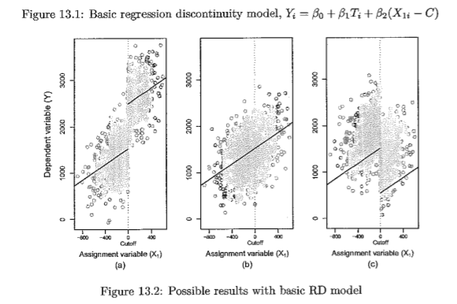
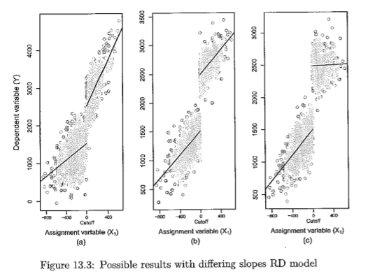
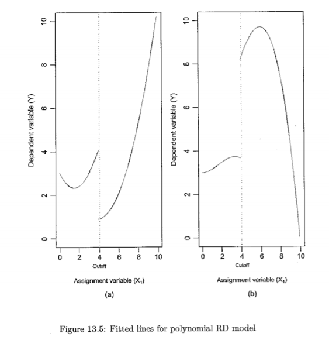

Regression Discontinuity
2020-10-15
HOME
NOTES RELATED
Notes
(Bailey, 2015)
- Context: when the treatment is not assigned randomly. For example, sometimes people are assigned to treatments or programs based on some rule that creates a "cutoff" on a continuous score
- Income must be below a cutoff to collect SNAP, or join Medicaid
- Adults must be age 65+ to join Medicare
- Key assumption: the only thing different between people just above versus those just below the threshold is the receipt of the "treatment".
- The basic model
- $y_i = \beta_0+\beta_1 T_i + \beta_2 (x_{1i}-C)+\epsilon_i, T_i=1 if x_{1i} \leq C else 0$
, where $T_i$ is treatment, $y_i$ is the outcome, and $x_{1i}$ is the "assignment variable" with cutoff at $C$
- Interpretation
- $\beta_1$: whether there was a jump in the outcome at the cutoff point (we're most interested in)
- $\beta_2$: the relationship between the distance-to-cutoff variable

- Varying slopes model
- $y_i = \beta_0+\beta_1 T_i + \beta_2 (x_{1i}-C)+ \beta_3(x_{1i}-C)T_i+\epsilon_i$
- Interpretation
- $\beta_3$ measures how different the slope is for observations above cutoff vs below cutoff
- $\beta_2$ now refers only to the slope for observations below the cutoff

- Polynomial model
- $y_i = \beta_0+\beta_1 T_i + \beta_2 (x_{1i}-C)+\beta_3 (x_{1i}-C)^2+ \beta_4 (x_{1i}-C) T_i+\beta_5 (x_{1i}-C)^2 T_i+\epsilon_i$

- Varying bandwidth
- One way to check results is to vary the size of the "window" around the cutoff.
- There are tradeoffs involved
- Reducing bandwidth reduces bias, because we have greater confidence in the similarity of people on either side of the cutoff, the closer they are to it.
- But it also reduces precision, by making your sample smaller. Your standard errors get larger, so you lose some statistical power.
- Diagnostics
- Qualitative (have to understand the source of any bias)
- Do the subjects know about the cutoff? If they don’t know about it, we’re less likely to see "strategic behavior"
- Even if they know that there is a cutoff, do they know the exact level? If not, there may not be as much gaming, e.g. people will just try to do their best on the test.
- Quantitative
- McCrary test: Test for bunching of the density around the cutoff
- Test whether other variables jump at the cutoff (Hainmueller, 2017)
- Placebo test: Try using an alternative cutoff, that wasn’t the one actually used to assign treatment.
- Limitations
- Generalizability: this design reports the effect of treatment on people close to the assignment threshold. It's a "Local Average Treatment Effect" (LATE).
- Timeframe: only describes short term effects of intervention. For longer term effects, we would need to follow up with another design.
- Fuzzy RD design
- RD design can also be used in situations where other factors beside the "assignment variable" affect assignment: Some get treatment even though they are below the threshold, and some don’t get treatment even though they are above the threshold
RD in Stata
Almost the same as OLS.